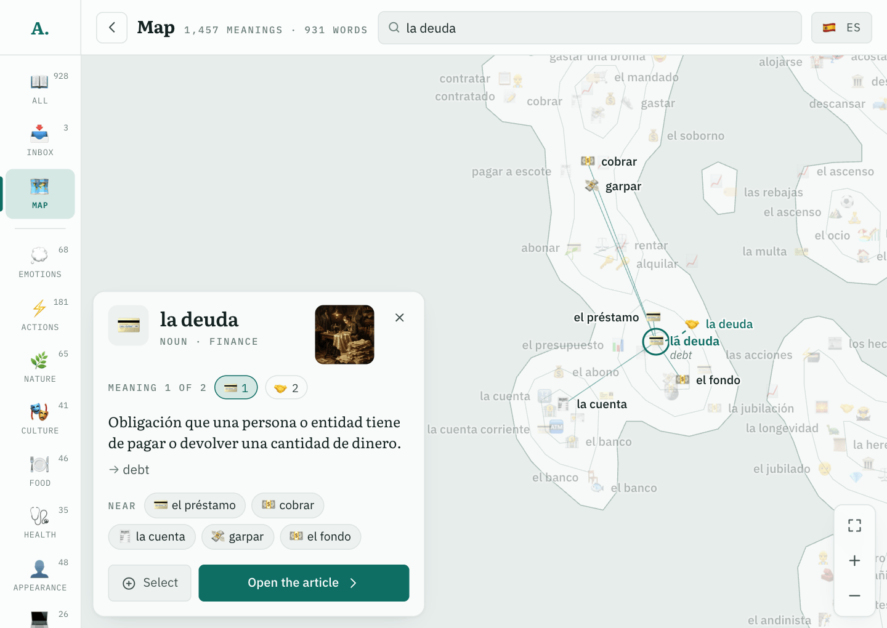
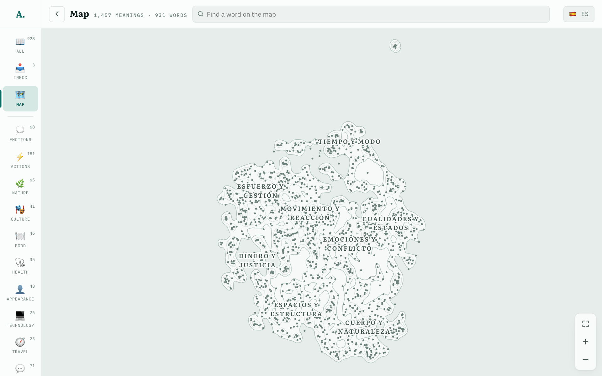

The whole map: 1,457 meanings in named regions
How it is made

1Embed each meaning, not each word, with a multilingual encoder (multilingual-e5-small).
2Lay out in two dimensions with UMAP.
3Group into about 8 regions and 30 neighbourhoods; a language model names them.